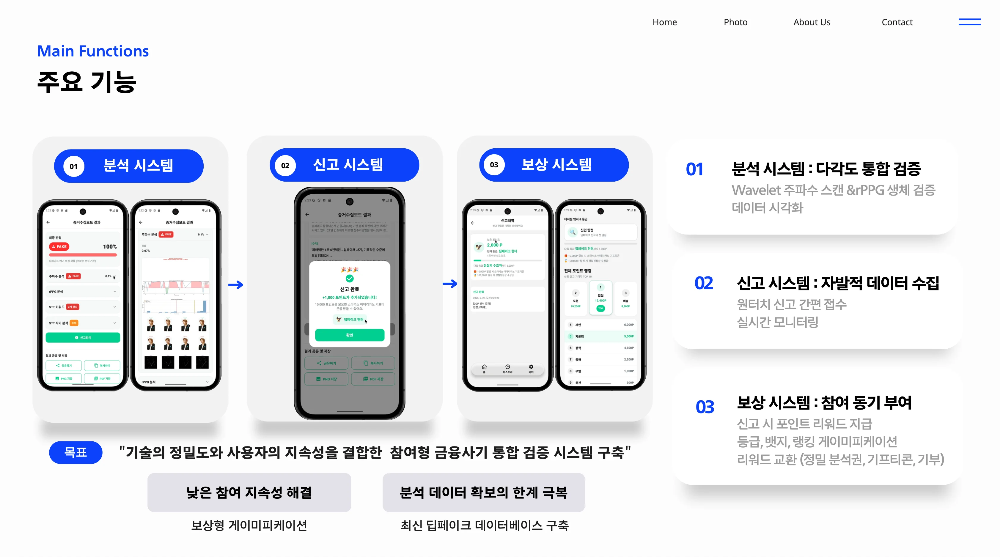

Project 02DDP — Deepfake Detection Pro Platform · 서비스 기획
2026.02.06~02.27 · 22일 · 팀 5명 · 기획 참여
Main
DDP — Deepfake Detection Pro
딥페이크 위협 대응 시민 참여형 탐지 플랫폼 · 리워드 생태계 설계
딥페이크 기술이 보이스피싱·허위광고·가짜뉴스에 악용되는 사례가 급증하는 사회 문제에서 출발했습니다. 탐지 도구를 일반 사용자에게 제공하고, 신고 참여를 리워드로 보상하는 시민 참여형 생태계를 기획했습니다.
타겟 사용자 & 사용 시나리오
- 일반 미디어 소비자: SNS·유튜브에서 의심 영상을 발견 → 즉시 URL 붙여넣기로 탐지
- 콘텐츠 크리에이터: 자신의 영상이 딥페이크로 도용됐는지 확인 후 신고
- 미디어 기관: 보도 전 영상 진위 확인 (Fast 모드로 빠른 1차 스크리닝)
- → 탐지 결과 신뢰도를 사용자가 쉽게 해석할 수 있도록 시각화 리포트 설계
Fast / Deep 모드 분기 설계 — 속도 vs 정밀도 트레이드오프
- Fast 모드: 3모달 병렬 처리 → 빠른 1차 판별 (일상적 의심 상황에 적합)
- Deep 모드: UNITE 고정밀 분석 → 법적 증거 수준 정밀 판별 필요 시 선택
- → 모든 상황에 최고 정밀도를 강요하지 않고 사용자 맥락에 따라 선택 제공

Fast / Deep 모드 선택 — 사용자 상황에 맞는 분석 깊이 선택 UX
리워드 생태계 설계 — 사용자 참여형 콘텐츠 검증
- 딥페이크 신고 1,000P 지급 → 사용자가 능동적 탐지 참여자로 전환되는 선순환 설계
- 4단계 배지 시스템: 활동 이력·신뢰도 시각화 → 플랫폼 내 신뢰 인프라 구축
- Top10 리더보드: 커뮤니티 경쟁 요소 + 기여자 가시화 → 재참여율 제고
- → 탐지 AI + 리워드 + 커뮤니티를 통합한 자기강화형 생태계로 확장성 설계

탐지 결과 대시보드 — 모달별 판별 신뢰도 시각화